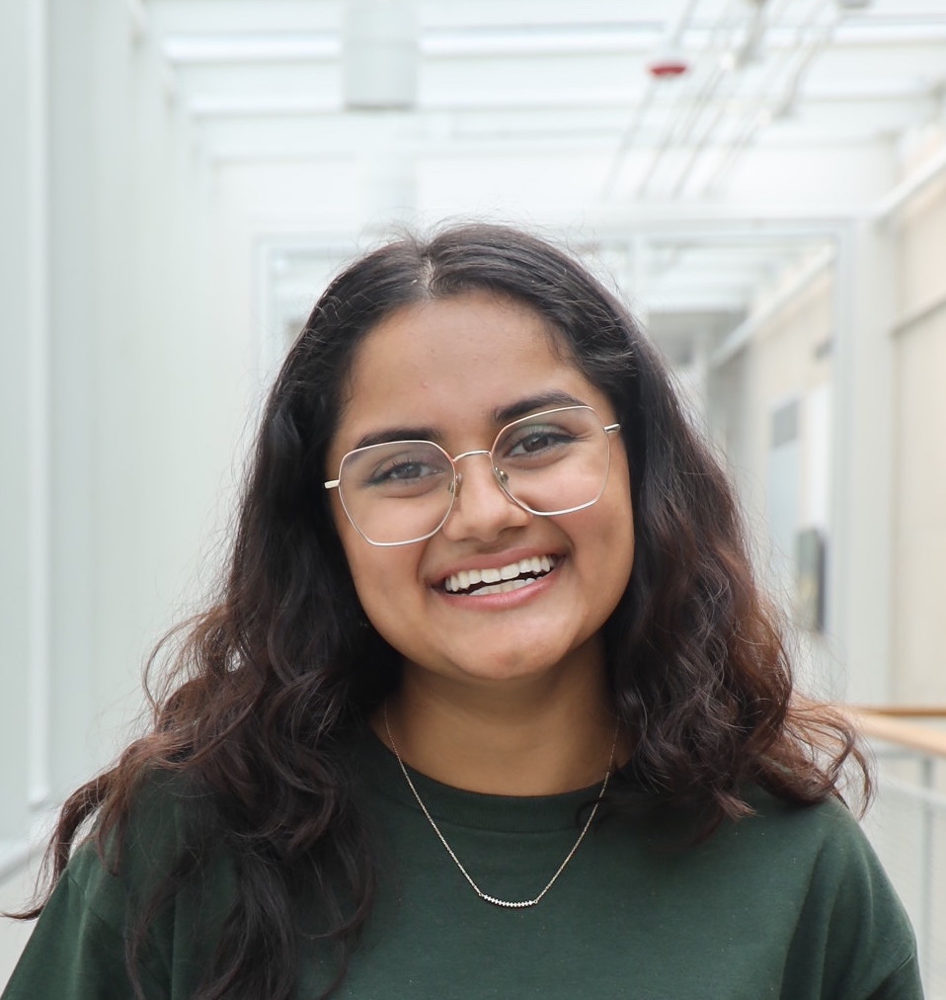
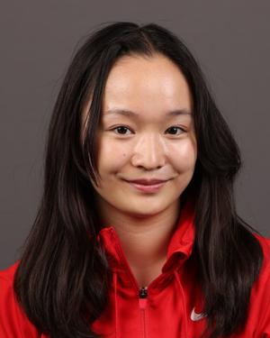
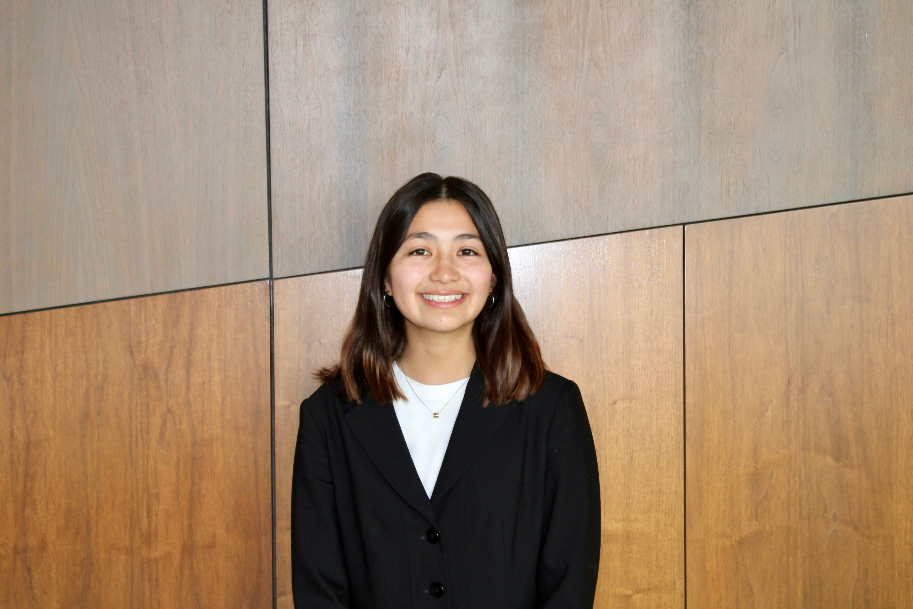
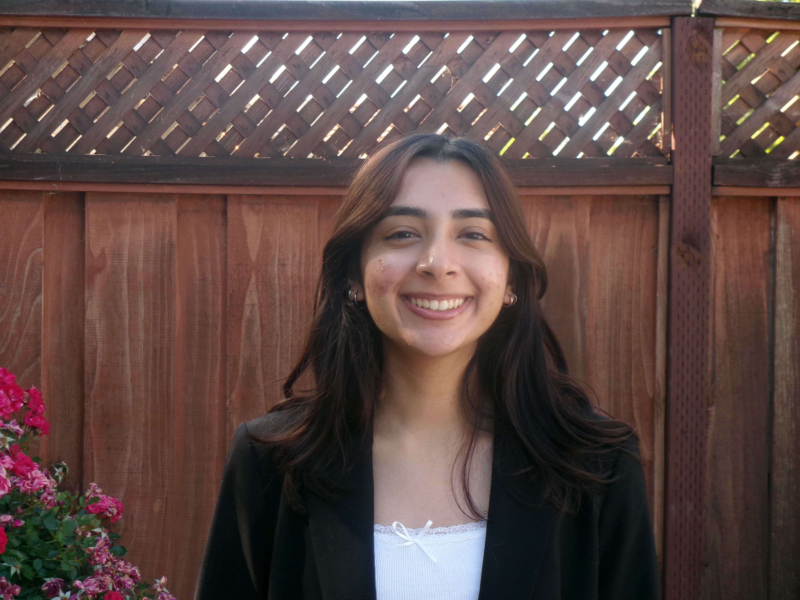
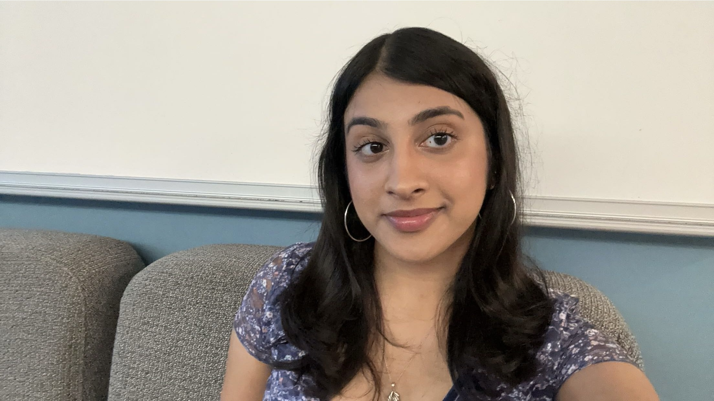
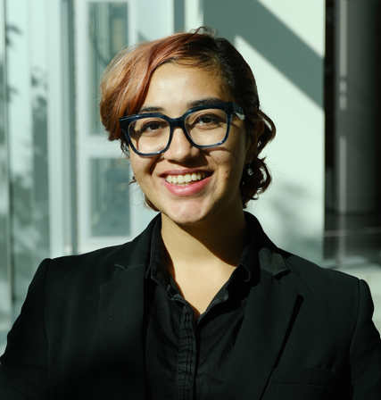
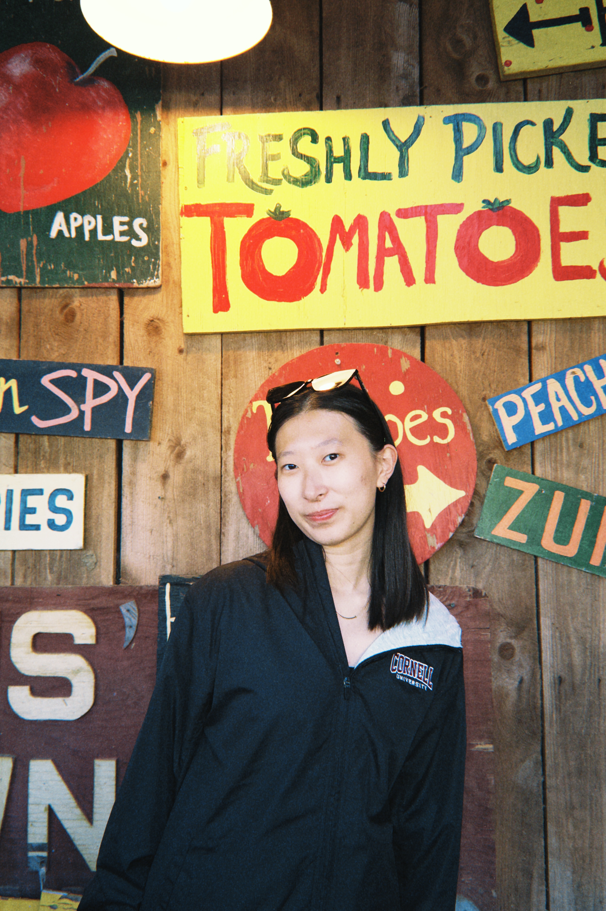
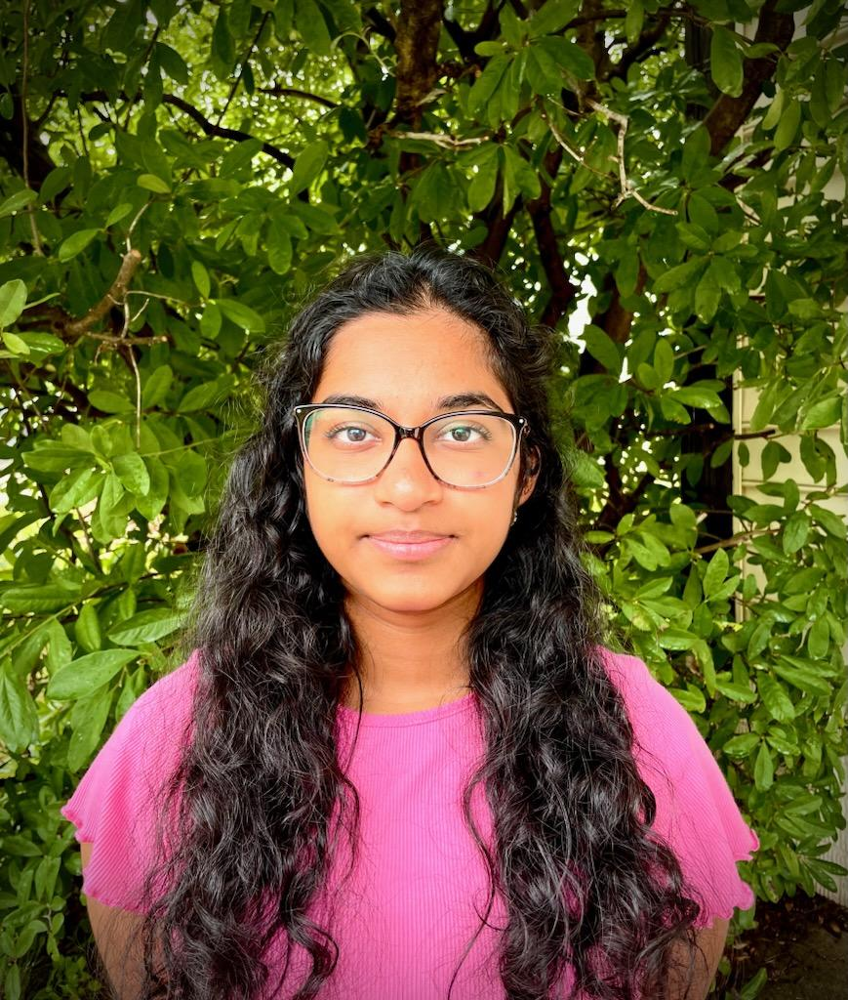
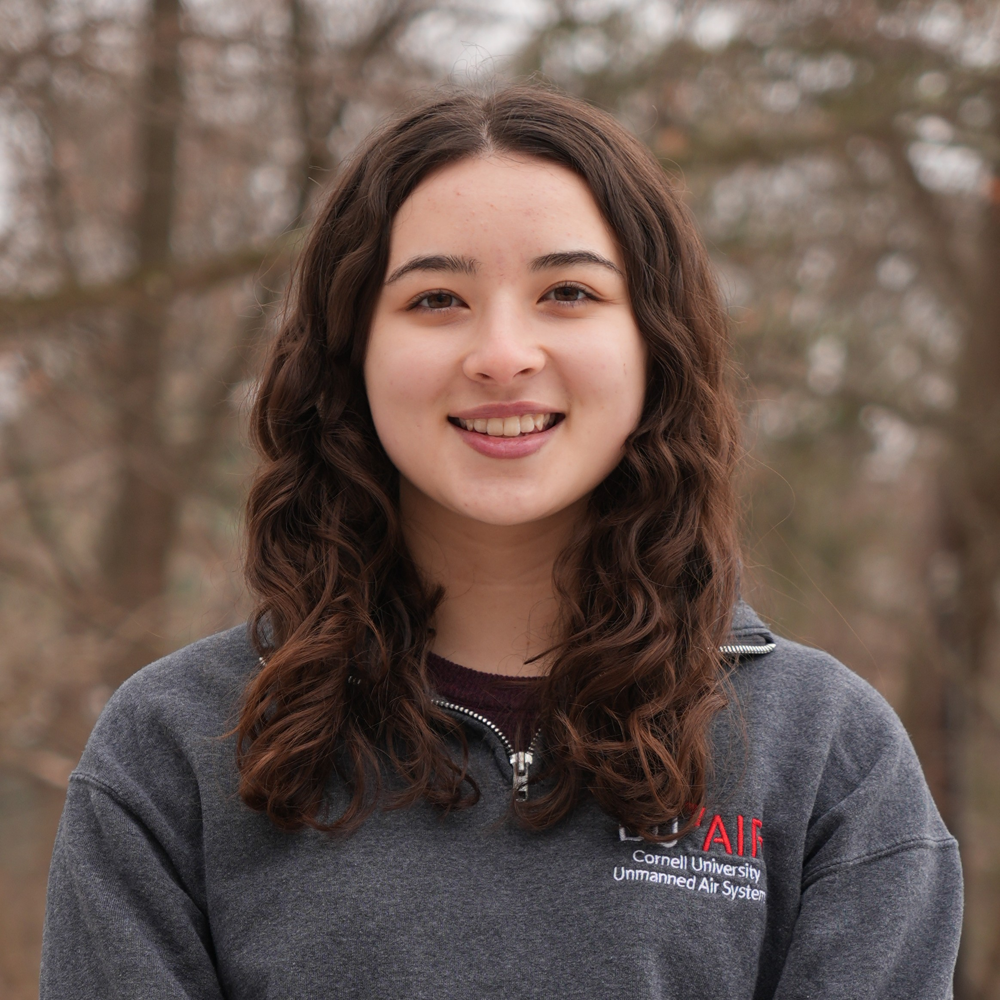

EBoard

Co-President - Kavya Mittha
Mechanical Engineering '26
Email: km773@cornell.edu
Hometown: San Jose, CA
Why I joined SWE: I joined SWE because I wanted to surround myself with a kind and supportive community of women within science and engineering. I am passionate about fostering a welcoming environment and encouraging the next generation of girls to pursue STEM. SWE allows me the opportunity to spread my love for engineering and the community to the Ithaca community and all around the world.

Co-President - Zoe Bishop
Mechanical Engineering '26
Email: zjb6@cornell.edu
Hometown: Seattle, WA
Why I joined SWE: I joined SWE to be a part of a supportive community of women engineers with similar passions. I am passionate about inspiring the next generation of women engineers and SWE gives me the opportunity to outreach to younger women interested in engineering and science.

Senior Finance Chair - Natalie Leung
Computer Science '27
Email: nl455@cornell.edu
Hometown: Los Angeles, CA
Why I joined SWE: SWE's mission to promote women in engineering really resonates with me, especially since I have experienced firsthand the lack of gender diversity in engineering. I joined SWE to help create more opportunities for women engineers and be part of their supportive community!

Junior Finance Chair - Dora Zhang
Computer Science '28
Email: dz366@cornell.edu
Hometown: San Diego, CA
Why I joined SWE: I joined SWE because I was seeking a community of like-minded, driven peers to grow alongside. Having experienced what it’s like to be a minority in the field of engineering, I wanted to contribute to making STEM more inclusive and equitable for future generations.

Fundraising Co-Director - Elizabeth Kline
Chemical Engineering '28
Email: elk92@cornell.edu
Hometown: Harleysville, PA
Why I joined SWE: I discovered SWE while researching Cornell’s engineering program last year as I was applying to undergraduate schools. SWE was one of the main factors that drew me to Cornell because I was looking for a community where I could network and collaborate with other highly academically driven women. I knew that being a part of SWE would help me find a community and establish a support system at Cornell. I wanted to join SWE because it aligned with my passion for creating a supportive environment for women in engineering and empowering underrepresented groups in STEM. SWE offers invaluable opportunities for professional growth, mentorship, and networking, which are crucial as I develop both personally and as a future chemical engineer. SWE’s mission of breaking down barriers and advocating for greater diversity in the engineering field resonates deeply with my own goals of making the industry more inclusive and equitable. I wanted to join SWE to equip me with the skills to continue to inspire women to pursue STEM opportunities post-graduation and beyond!

Fundraising Co-Director - Kylie Kaneshige
Chemical Engineering '27
Email: kjk245@cornell.edu
Hometown: Dallas, TX
Why I joined SWE: I wanted to connect with other women in engineering outside of the classroom. I felt like too often my friendships were based around the classroom, but finding those connections outside of class helps foster better relationships.

Outreach Co-Director - Damita Sara George
Computer Science '27
Email: dg662@cornell.edu
Hometown: Pleasanton, CA
Why I joined SWE: I’ve been involved with SWE since high school because I’ve always appreciated how it encourages girls to pursue engineering and provides a really supportive environment to help them grow. It’s such an empowering space, and being part of it made me feel more confident in my own path. When I got to college, joining SWE was something I was genuinely excited about. From the start, SWE stood out—they were so welcoming and full of energy during my freshman O-week at the tie-dye event they hosted. It immediately felt like a community I wanted to be part of, not just for the professional resources, but also for the friendships and sense of belonging.

Outreach Co-Director - Parvi Chadha
Computer Science '27
Email: pc728@cornell.edu
Hometown: Centervilla, VA
Why I joined SWE: I joined SWE because I have always had a passion for engineering and STEM and I wanted to be part of a community of amazing and inspiring women who share this passion. SWE also helps provide me with the opportunity to help spread engineering and STEM throughout the local Ithaca community and beyond.

Senior Corporate Relations Director - Meet Baani Kaur
Operations Research and Engineering '27
Email: mk2425@cornell.edu
Hometown: Dehradun, India
Why I joined SWE: For the wonderful people and opportunities!

Junior Corporate Relations Director - Susan Xu
ISST '27
Email: zx323@cornell.edu
Hometown: Bronxville, NY
Why I joined SWE: I joined the Society of Women Engineers because it offers a unique opportunity to connect with women in STEM across universities and industries. As someone in a corporate role, I’m especially excited about the chance to engage with students from different engineering majors, build relationships beyond my immediate field, and contribute to a supportive network focused on growth, inclusion, and mentorship. Being newly elected, I look forward to bringing my perspective to SWE while learning from others who are equally passionate about advancing women in engineering.

Career Development Co-Director - Bhavya Anoop
Chemical Engineering '27
Email: ba436@cornell.edu
Hometown: Cleveland, OH
Why I joined SWE: I joined SWE to be a part of a supportive community of women in engineering. Being a part of SWE has allowed me to meet other women in STEM, advocate for inclusivity in the field, and foster both my own and others’ professional growth. More specifically, as someone passionate about career growth and professional development, I was drawn to the Career Development Committee.

Career Development Co-Director - Natalie Shepherd
Biomedical Engineering '27
Email: nms225@cornell.edu
Hometown: Brookline, MA
Why I joined SWE: I joined SWE because it creates a unique space to connect with and mutually support other women engineers. I loved SWE's mission and wanted to further is positive impact on the Cornell community. More specifically, I have enjoyed working on the career development committee to make career resources more available to Cornell students.

Student Services Co-Director - Esha Shah
Computer Science '27
Email: es999@cornell.edu
Hometown: Paramus, NJ
Why I joined SWE: I wanted to be part of a supportive group of women in STEM that I can both learn from and grow with!

Student Services Co-Director - Pratyusha Mandal
Biomedical Engineering '27
Email: pm634@cornell.edu
Hometown: Rockville, MD
Why I joined SWE: I joined SWE because I had a passion for giving back to the community and also for the opportunities that SWE presented. I appreciate all the networking opportunities we have, and the ability to help a community within engineering have a solid path to their future interests and jobs. SWE has also provided me with leadership opportunities to work within a community and aid in my professional development.

Communications Co-Director - Kaitlyn Roach
Biomedical Engineering '27
Email: ker238@cornell.edu
Hometown: Orinda, CA
Why I joined SWE: I decided to join SWE because I wanted to find a community within engineering. SWE was able to help me connect with other students and learn about new opportunities.

Communications Co-Director - Allison Newman
Mechanical Engineering '28
Email: akn47@cornell.edu
Hometown: Monterey Park, CA
Why I joined SWE: I wanted to join a community full of talented female engineers who are just as excited about teaching more young women about STEM as they are to learn about STEM themselves.

Conference Co-Director - Courtney Candy
ORIE '26
Email: cec345@cornell.edu
Hometown: Middletown, DE
Why I joined SWE: To build my community within Engineering with awesome women!

Conference Co-Director - Isabel Berkenblit
Civil Engineering '26
Email: ib294@cornell.edu
Hometown: Sharon, MA
Why I joined SWE: To find a community of supportive, empowered, and driven peers.